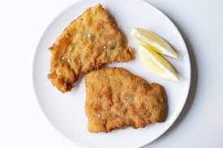

Como hacer una milanga

Descripcion
Es una pechuga de pollo rebozada en pan rallado.
Ingredientes
- Pechuga de pollo
- Huevo
- Harina
- Pan rallado
- Especias
Pasos a seguir
- Cortamos la pechuga
- Mojamos la pechuga en el huevo ya condimentado
- La pasamos por harina
- La mojamos nuevamente con el huevo y la pasamos por pan rallado
- Cocinamos la milanesa en el horno o al aceite, depende de nuestra preferencia
- Listo! ya tenemos nuestra milanesa lista